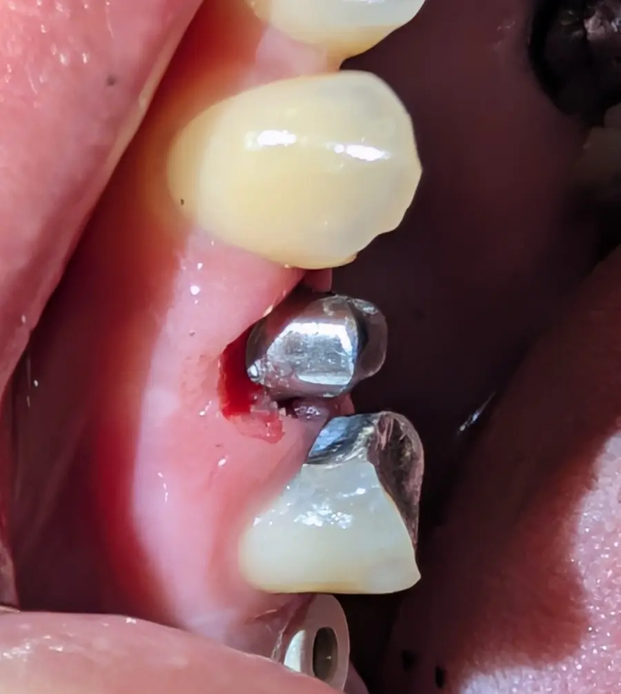
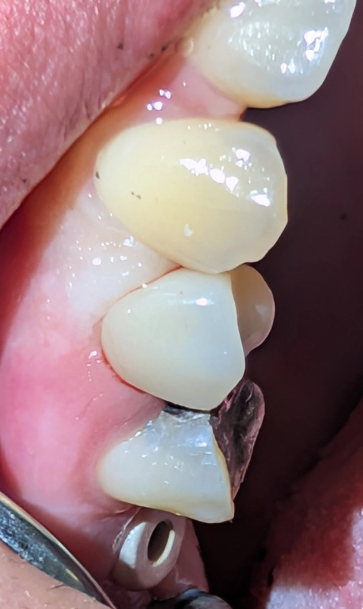

نسخه استخراجشده؛ ترجمه یا تأیید علمی انجام نشده است. وضعیت: captured
هیلینگ اباتمنت بسته بوده و حالا پروفایل لثهی گرد و باریکی شکل گرفته که قطرش با قطر اباتمنت نهایی و فرم آناتومیک دندان همخوانی ندارد. روکش نهایی چطور روی این بافت بنشیند؟
شکلدهی تدریجی بافت با تعویض هیلینگ یا با رستوریشن موقت طی چند هفته. این روش جواب میدهد ولی زمانبر است.
در مواردی که بیمار حجم کافی از لثهی کراتینیزه دارد، این مرحلهی طولانی جایگزین میشود: اباتمنت نهایی بسته میشود و قبل از گذاشتن روکش، فرم لثهی اطراف مستقیماً با فرز و ژینژیوکتومی اصلاح میشود.


نتیجه این است که لثه خیلی سریع فرم میگیرد و روکش راحت سر جایش مینشیند، بدون اینکه چند هفته با تغییر تدریجی فرم هیلینگ بافت آماده شود.
این روش بیشتر برای نواحی خلفی و غیرزیبایی مناسب است؛ چون در ناحیهی زیبایی، روش تدریجی با provisional پیشبینیپذیری بهتری برای سطح نهایی مارجین لثه میدهد.